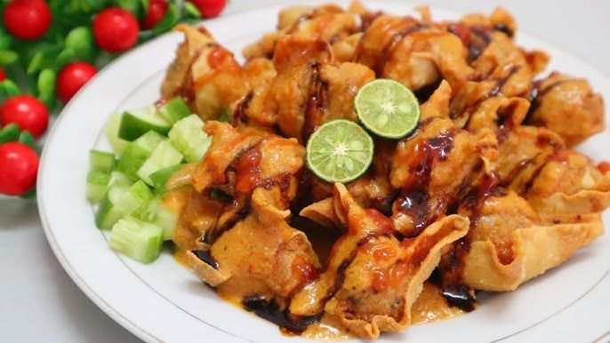
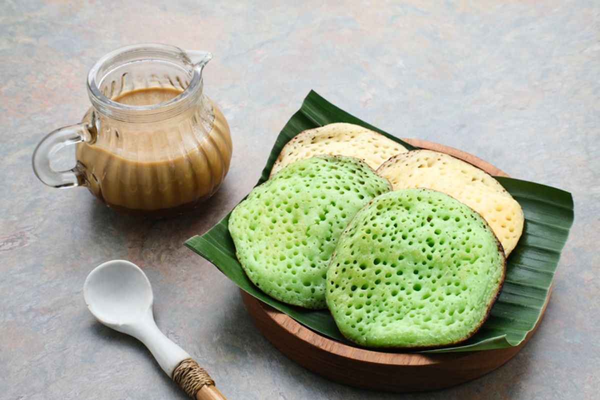
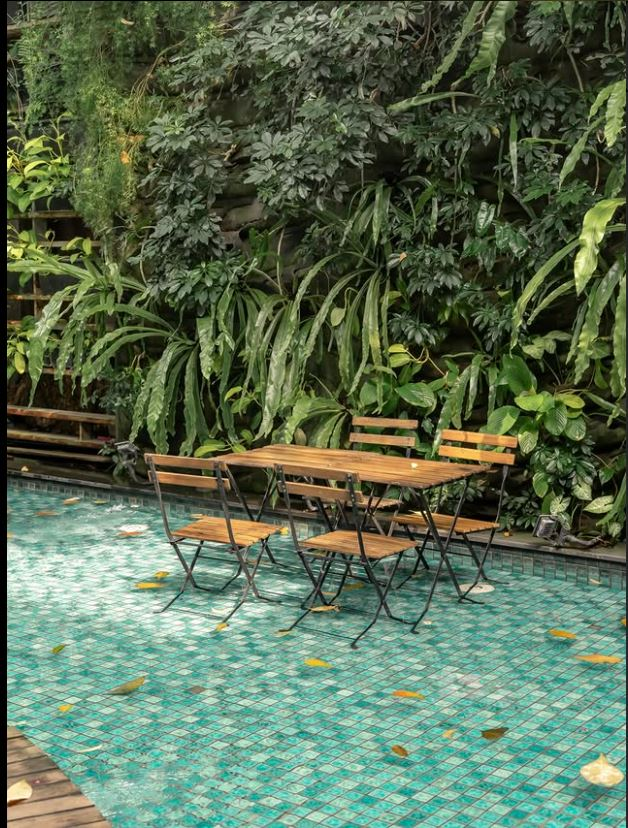
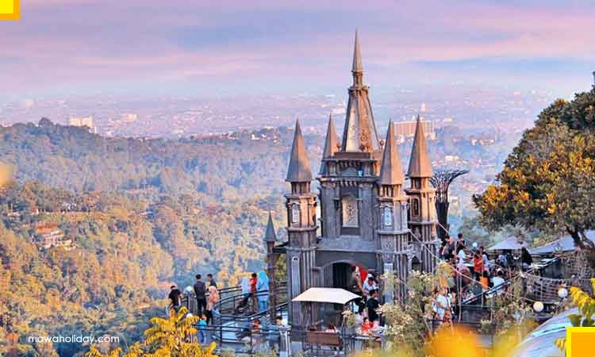
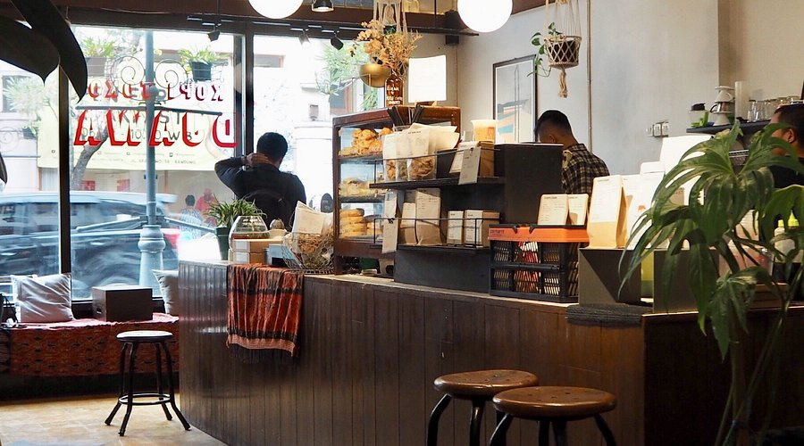

Bandung
KULINER
wisata kuliner khas Bandung.

Batagor (Bakso Tahu Goreng)
Kuliner ikonik Bandung berbahan dasar ikan tenggiri yang digoreng garing dan disajikan dengan bumbu kacang kental.
📍 Rekomendasi:
ミ☆ Batagor Kingsley - Jl. Veteran No.25
ミ☆ Batagor Riri - Jl. Burangrang No.41
☀︎⋆࿔:Batagor Kingsley Location ☀︎⋆࿔Batagor Riri Location
Mie Kocok
Kuliner ikonik Bandung berbahan dasar mie kuning, kikil sapi, tauge, dan kuah kaldu sapi kental dengan taburan bawang goreng dan seledri
📍 Rekomendasi:
ミ☆ Mie Kocok Persib - Jl. Ahmad Yani
ミ☆ Mie Kocok Mang Dadeng - Jl. Banteng No.67
☀︎⋆࿔:Mie Kocok Persib Location ☀︎⋆࿔:Mie Kocok Mang Dadeng Location

Surabi bandung
Kuliner ikonik Bandung terbuat dari tepung beras yang dimasak di atas tungku tanah liat. Ada dua jenis: surabi asin (pakai oncom) dan surabi manis (pakai kinca gula merah atau topping modern seperti keju dan cokelat).
📍 Rekomendasi:
ミ☆ Surabi Cihapit - Jl. Cihapit No.15
ミ☆ Waroeng Soerabi - Jl. Dr. Setiabudi No. 185
☀︎⋆࿔:Surabi Cihapit Location ☀︎⋆࿔:Waroeng Soerabi LocationBandung
KULINER
wisata kuliner urban di bandung.

One Eighty Coffee
Cafe ini terkenal karena kamu bisa makan di meja yang berada di kolam dangkal air! Suasananya adem, interiornya modern industrial dengan sentuhan kayu, cocok buat foto-foto. Menu andalannya mulai dari pasta, pizza, hingga minuman kopi signature.
📍 address
One Eighty Coffee & Music - Jl. Ganeca No.3, Dago, Bandung
✧˖°One Eighty Coffee & Music Location

Dago Bakery Punclut
Tempat ini terkenal dengan bangunan bergaya kastil Eropa di kawasan perbukitan Punclut. Dari sini kamu bisa lihat pemandangan kota Bandung dari atas sambil menikmati roti, steak, atau minuman hangat. Estetik banget buat foto sunset!
📍 address
Dago Bakery Punclut - Jl. Pagermaneuh No.57, Punclut, Bandung
✧˖°Dago Bakery Punclut Location
